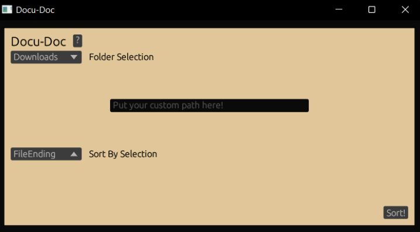

Docu-Doc
I am part of the team developing Docu-Doc, a project we completed for our senior seminar course at our university and continuing to improve outside of it. I am responsible for the front end development of the app which was done entierly in the programming language Rust.
When you first open Docu-Doc, you will be presented with a GUI (shown above) that asks for you to select a predetermined path or provide a custom one (done by copy and pasting the directory pathing) in the textbar. Then, you can select your algorithm and click the sort button.
After that, Docu-Doc handles the rest for you. It will recurse into subfolders within the main folder too (so be careful where you use it!). Planned features for Docu-Doc in the future include support for Linux and Mac OS, as well as expanded options, more sorting algorithms, safety checks (like being able to undo sorts) and easier specification of custom pathing.
Meet the Devs:
- Wyatt Hackley
- Grant Welton
- Steven Tagner
- Michael M.